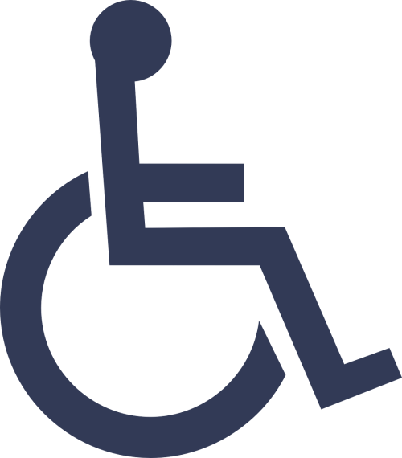
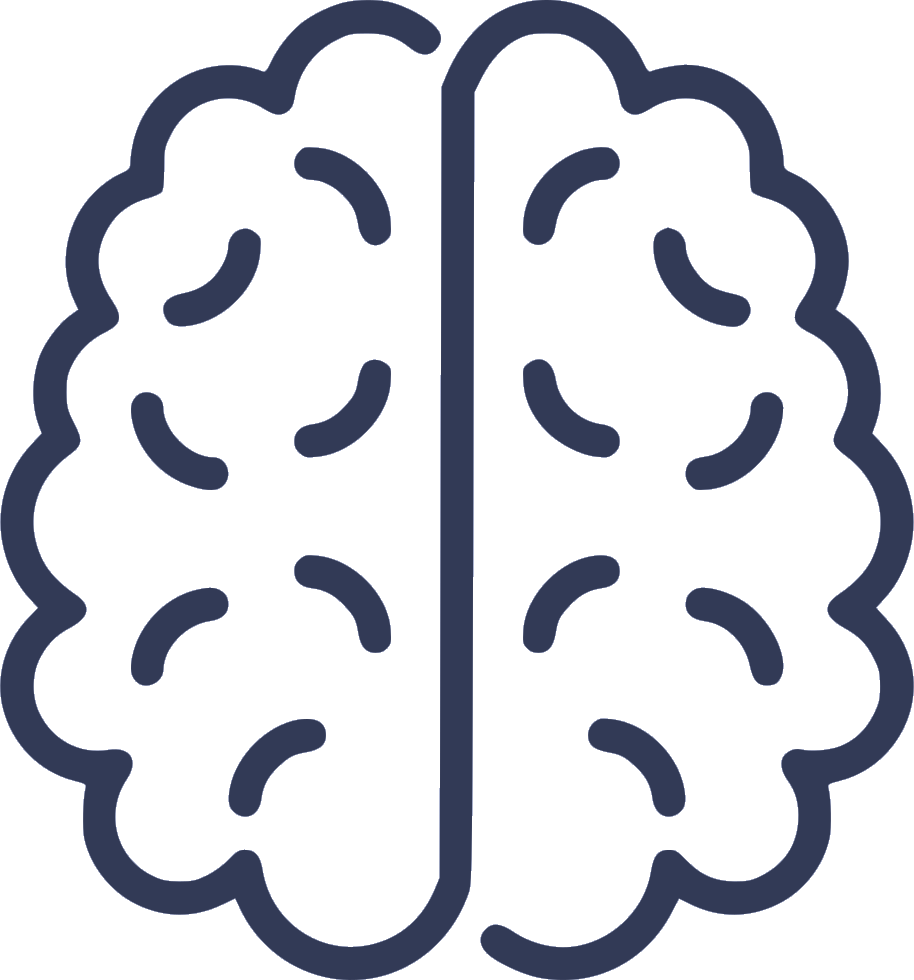

Accesibilidad
-
¿Qué es?
La accesibilidad en términos informáticos consiste en la facilidad que tiene un usuario cualquiera de navegar por nuestra página web. Cuando hablamos de cualquier usuario, debemos hacer foco sobre todo en aquellas personas que puedan tener mayores dificultades o discapacidades, pues no es lo mismo, desde luego, una discapacidad temporal de una fractura de un brazo, a una discapacidad. En el siguiente apartado se explicará brevemente donde podemos encontrar una mala accesibilidad y cómo podemos evitarlo. que no es temporar como pérdida de audición.
-
Conceptos básicos de accesibilidad. POUR.
Para entender de una forma más métodica, qué es la accesibilidad, tratamos con las Pautas de accesibilidad a contenido web (WCAG). Estas pautas constan de cuatro principios básicos, llamados con la palabra POUR:
Perceivable (Perceptible): el contenido debe ser percibido por todos los usuarios.
Operable (Manejable): nuestra página se debe ser navegable por todos los usuarios.
Understandable (Comprensible): el contenido se debe entender, así como la interfaz para poder ser usada sin confusiones.
Robust (Sólido): una página que pueda ser consumida por una gran variedad de navegadores.
-
Diversidad de usuarios
A la hora de realizar una aplicacion web debemos tener en cuenta que nuestra página llegará a una gran variedad de usuarios. Estos usuarios, pueden tener ciertas discapacidades, provocando que no puedan consumir el contenido de la página igual que otras personas. Las discapacidades que un usuario pueda tener se dividen prncipalmente en cuatro diferenciados grupos:
visual, motriz, auditiva y cognitiva.
 Visual
La discapacidad visual puede variar según la pérdida de visión que tengas. Existe gente con mayor o menor visión y existe gente que no tienen ningún tipo de visión. Se usan alternativas como lector de pantalla, braille, lupa de pantalla. etc.
Motriz
Aquellas personas con dificultades físicas. Estos usuarios usan teclado, control de voz, dispositivo de interrupción o una de rastreo ocular para interactuar con el ordenador. Al igual que las discapacidades visuales éstas pueden ser temporales o circunstanciales.
Auditiva
Varían entre usuarios totalmente sordos o con dificultades auditivas. Para este caso, existen ayudas como audífonos, subtítulos en los vídeos o transiciones.
Cognitiva
Dentro de la gran variedad de afecciones cognitivas podemos encontrar trastornos de déficit de atención o autismo. Los diseños mínimos pueden ayudar a estas personas a concentrarse en la lectura del contenido y a su vez, ayudan a la carga cognitiva.
Es muy importante contar con una página accesible, en caso adverso, estariamos excluyendo a ciertos usuarios con dichas dificultades de muchos productos.
Áreas tematicas principales para la creación de una página accesible
-
Foco
Importante para aquellos que tienen dificultades motrices. Se trata de crear cosas que puedan ser manejadas con teclado y no con mouse.
-
Semántica
Mostrar la interfaz de usuario de forma sólida para distintas tecnologías.
-
Estilos
La accesibilidad en términos informáticos consiste en la facilidad que tiene un usuario cualquiera de navegar por nuestra página web. Cuando hablamos de cualquier usuario, debemos hacer foco sobre todo en aquellas personas que puedan tener mayores dificultades o discapacidades, pues no es lo mismo, desde luego, una discapacidad temporal de una fractura de un brazo, a una discapacidad. En el siguiente apartado se explicará brevemente donde podemos encontrar una mala accesibilidad y cómo podemos evitarlo. que no es temporar como pérdida de audición.